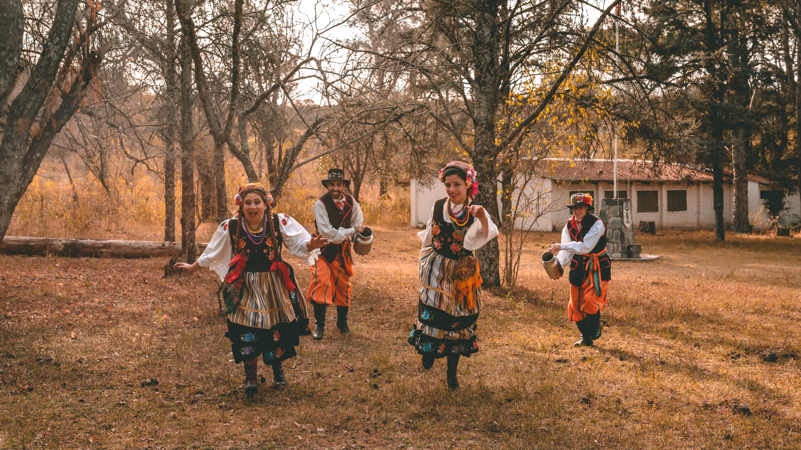
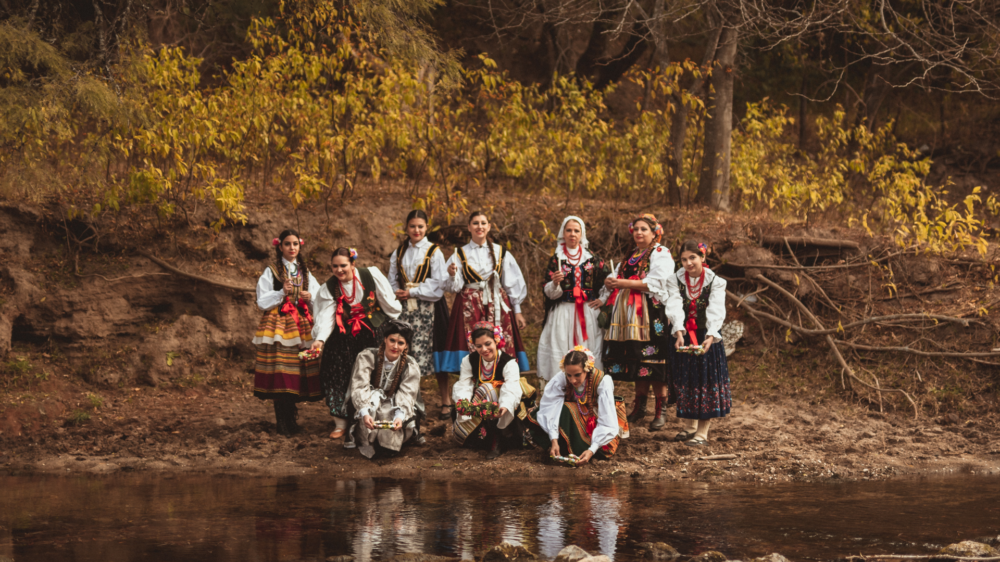
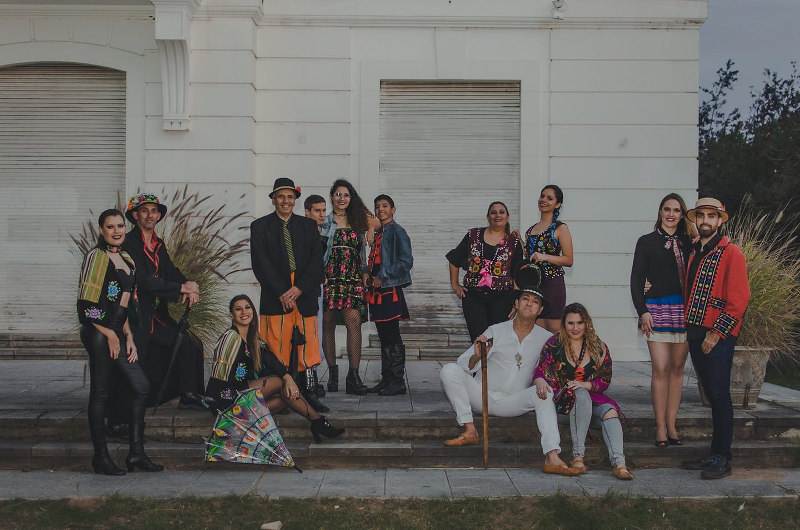
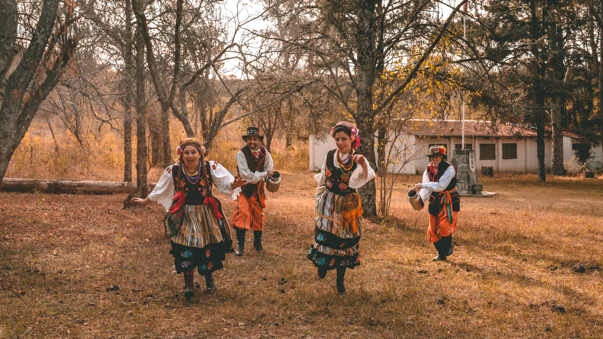
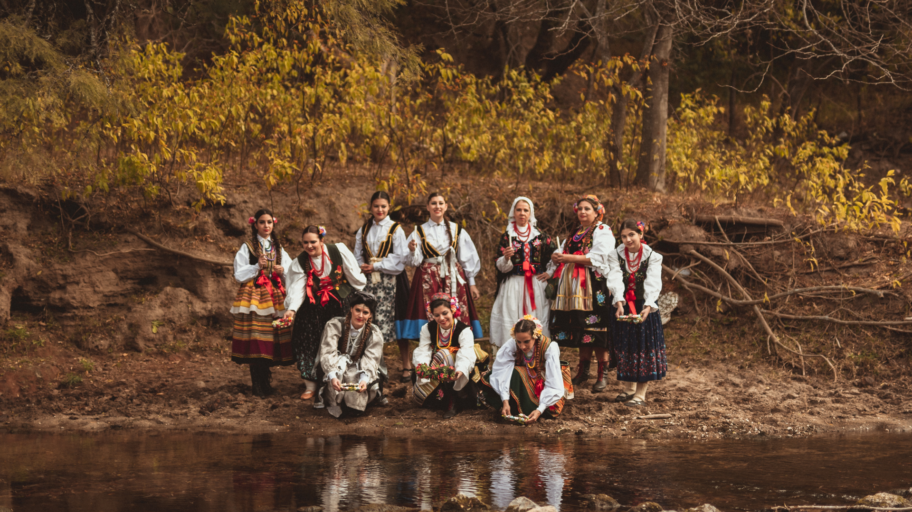
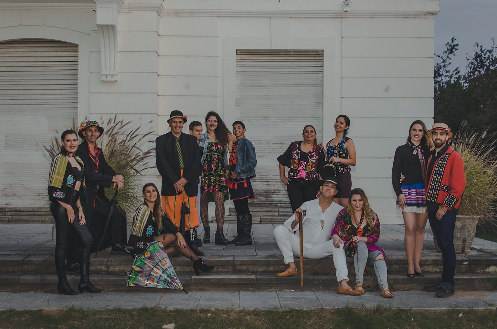

Asociación Civil Nueva Polonia
Bienvenidos a nuestro sitio web
ContactoBienvenidos a nuestro sitio web
ContactoConocé nuestras actividades de danza, idioma, eventos gastronómicos, ciudadanías y traducciones en la ciudad de Córdoba, Argentina
ContactoPoznaj nasze zajęcia taneczne, językowe, wydarzenia gastronomiczne, załatwienie potwierdzenia posiadania obywatelstwa polskiego i usługi tłumaczeniowe różnych dokumentów w mieście Córdoba, Argentyna.
Kontakt


Asociación Civil Nueva Polonia (Personería Jurídica - Resolución Nº 063 “A”/12),
se funda en el año 2012 en la ciudad de Córdoba en el centro de Argentina,
formalizando el trabajo que ya venía realizando un grupo de personas desde el
año 2009. Es de carácter voluntario y se encuentra abierto a todas las
personas sin distinción de origen, etnia, edad, género o religión.
Tiene como misión principal, difundir la cultura polaca en Argentina y la
cultura argentina en Polonia, como así también en el resto del mundo.
Nueva Polonia cuenta con una importante trayectoria como referente de transmisión de la cultura que representa. Cuenta actualmente con el dictado del Curso Virtual de Idioma Polaco y su Grupo de Canto y Danzas Nowa Polonia ha realizado sus presentaciones en diferentes eventos culturales y gastronómicos en localidades de la República Argentina como en el exterior del país, acercando al público el colorido del folklore como la diversidad de los sabores polacos.

El Grupo de Canto y Danzas Nowa Polonia de la Asociación Civil Nueva Polonia nació el 22 de agosto de 2009 en la ciudad de Córdoba, en el centro de Argentina. Con más de 10 años de trayectoria, este Grupo ha realizado presentaciones en diferentes festivales de danza y gastronomía en distintas localidades cordobesas como Oktoberfest de Villa General Belgrano y la Fiesta de Colectividades de Alta Gracia, se ha presentado en diversas ciudades del interior del país como la Fiesta Nacional del Inmigrante en Oberá en la provincia de Misiones, La Noche de las Colectividades en Rosario, Santa Fe y la Fiesta Provincial del Inmigrante en Concordia, Entre Ríos; como así también a llevado su espectáculo al exterior del país participando del reconocido festival PolFest en Guaraní das Missões, Brasil.
+InfoLos Cursos de Idioma Polaco en diversos niveles, se desarrollan año a año en talleres presenciales desde inicios de esta Asociación. Debido a la pandemia del virus COVID-19, debieron interrumpirse y se lanzó el Curso Virtual de Idioma Polaco que se dicta por primera vez en formato digital. Este curso está dirigido a personas mayores de 16 años, de habla hispana sin importar el lugar de residencia y sin conocimiento previo de la lengua polaca.
+Info
Si tenés un antepasado nacido en Polonia, podés obtener la Ciudadanía Polaca con la cual podrás acceder luego al Pasaporte Polaco. Este último te otorga derechos y facilidades de estudios, trabajo o residencia en cualquier país de la Unión Europea, de la que Polonia es parte desde 2004.
+Info
Este grupo está dirigido por Victor Eduardo Bustos, Coreógrafo doblemente titulado en el Centro de Formación Cultural de Katowice (19..) y por la Universidad Politécnica de Rzeszów (2019). Varios integrantes de Nowa Polonia se han capacitado en el “Curso de Estudio Coreográfico Polaco” organizado por la Universidad Politécnica de Rzeszów y Stowarzyszenie Wspólnota Polska, obteniendo el título de Coreógrafos dos de ellos: Julia Florentyna Bustos y Leandro Agustín Acosta.
Día y horario de ensayo: Sábados 16 a 19 hs.
Lugar: CAPEM, Caseros 356, B° Centro, Córdoba, Argentina.
El dictado del Curso estará a cargo de Víctor Eduardo Bustos, Profesor y Traductor Público egresado de la Universidad Jagellónica de Cracovia, Polonia. Con más de 25 años en la docencia, Víctor se encuentra en continua capacitación en cursos organizados por Stowarzyszenie "Wspólnota Polska" , entre otras organizaciones. Además, fue convocado en reiteradas oportunidades como representante de Argentina para participar del Consejo de Educación Polonesa organizado por el Ministerio de Educación Nacional de Polonia e integra activamente la Asociación de Maestros de Polaco en Argentina - PONA.
Día y horario del Curso Virtual de Idioma:
1º Año: Lunes 20 a 21 hs.
2º Año: Martes 20 a 21 hs.
Además, si necesitás realizar traducciones del español al idioma polaco o del polaco al español de documentaciones por estudio, trabajo, actividades comerciales o diversa índole, tenemos amplios antecedentes en estos campos. Ofrecemos:
- Servicio de traducciones del idioma polaco al español y viceversa, de documentación de diversa índole.
- Tramitación de Ciudadanías con asesoramiento y seguimiento de cada caso.
Estos servicios son brindados por Víctor Eduardo Bustos, Profesor y Traductor Público egresado de la Universidad Jagellónica de Cracovia, Polonia. Matrícula el Colegio de Traductores Públicos de la Provincia de Córdoba nº 337.

 




